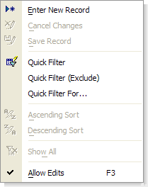

<OBJECT>.RIGHTCLICK()
Syntax
<OBJECT>.RIGHTCLICK( Object_Pointer as P, Region as C )
|
Argument |
Description |
|
|
Object_Pointer |
A pointer to a form, browse, or child object on a form or browse. |
|
|
Region |
Context |
Description |
|
Form |
Specifies V4 compatibility for a form.
'then system Field Lock menu is show, regardless of whether a right-click menu is defined for the form. | |
|
Browse |
Specifies the region selected for a browse.
| |
Description
The <OBJECT>.RIGHTCLICK() method applies to:
Browses (for <OBJECT> use either the <BROWSE> pointer or the name of the browse)
Forms (for <OBJECT> use either the <FORM> pointer or the name of the form)
The <OBJECT>.RIGHTCLICK() method displays the Right Click menu for the selected object.
Supported By
Alpha Five Version 5 and Above
Limitations
Desktop applications only.
Example
The following example displays a right click menu.

|
dim ptr as P dim pchild as P ptr = form.load("Travel Time") pchild = ptr.child("ThisWeather") ? ptr.rightclick(pchild, "") |
See Also
Form Functions and Methods, Browse Functions and Methods